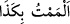
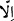

yapsa onun ecrini alır.
Büyük günah; cezâsı ağır olan yahut hakkında husûsî tehdîd bulunan şirk, zina ve
özellikle de komşunun zevcesiyle yapılan zina, mutlak anlamda masum kimseleri
öldürmek ve özellikle de kız evlâdları diri diri toprağa gömmek şeklindeki
öldürmelerden müteşekkildir.
İbn Cübeyr büyük günahın Rasûlullah (s.a.)’ın: “İstiğfarla birlikte büyük günah,
ısrarla birlikte küçük günah yoktur.”[101] Yâni istiğfar edince büyük günah affolunur,
ısrar edince de küçük günah büyük günaha dönüşür buyruğunda beyân edilen şekil
olduğunu belirtir. Bir hadis-i şerifte de: “Aman ha! Günahın yakıcı olanlarından
kaçınınız!”[102] buyrulmuştur. İbn Abbâs (r.a.) da büyük günahın yaklaşık yetmiş kadar
olduğunu söyler. Bu konudaki tafsilat (eş-Şûrâ 42/37-43) arasındaki benzer âyetlerde
zikredilmiştir.
“Ve edepsizliklerden kaçınanlara gelince” Yâni büyük günahlar içinde bilhassa
zinâ, haksız yere birini öldürme vb. çirkinliği açık olan fuhşiyâttan kaçınırlar. Büyük
günahlardan sonra edepsizliklerin (fevâhiş) zikredilmesi, tâmimden sonra tahsis ifâdesi
nev’indendir.
Râgıb der ki “fuhş”, “fahşâ” ve “fâhişe” kelimeleri söz ve işlerin çirkin ve aşırı
olmasını ifâde eder.
“Ufak tefek kusurları dışında, …” “Lemem” kelimesi ma’siyete yaklaşmak
mânâsınadır. (), “Falanı bir müddet için ziyaret ettim, ona kısa müddet için
yaklaştım, konuk oldum” ve “illâ” yâni “oğlan buluğ çağına yaklaştı” mânâlarında
olduğu gibi yukarıdaki âyet-i kerîmede bu kelime (azlık ifâdesi olan) günah-ı sağir ile
tâbir olunur. () ile olan istisnâ munkatı istisnâdır. Çünkü ()’den murad küçük
günahlar olduğu için bu da munkatı istisnâdır. Bu da istisnâ edatının ‘günah-ı kebâir’in
mânâsına dâhil olmadığını gösterir. Âyetin mânâsı; “Ancak az ve küçük olan günahlar
kebâir hükmünün dışındadır” şeklindedir. Zira küçük günah, büyük günahtan
uzaklaşmaya çalışan kimseden bağışlanır. Yâni beş vakit namaz, iki cuma arası ve iki
ramazan arası yapılan ibâdetler, aralarındaki (küçük) günahların bağışlanma sebebidir.
Yeter ki kişi o vakitlerde büyük günahlardan kaçınsın. Allah Teâlâ “Çünkü iyilikler
kötülükleri giderir.” (Hud 11/114) ve “Eğer size yasaklanan büyük günahlardan
kaçınırsanız, sizin küçük günahlarınızı örteriz.” (en-Nisa 4/31) buyurmuştur.
“Lemem”in kasıtsız olarak nâ-mahreme bakma mânâsında olduğu da söylenmiştir.
Eğer kişi önüp bakarsa artık bu küçük günah sınırından çıkmış ve o kimse de günahkâr
olmuş olur. Bir göz işâreti ve bir öpücük de bu kabildendir. Nitekim rivâyet edildiğine
göre bu âyet bir hurma satıcısı hakkında inmiştir. Şöyle ki: “Hurma satıcısının yanına
bir kadın hurma almak için gelir. Adam ona dükkâna girmesini söyler ve dükkânda
boynuna sarılıp öper. Bunun üzerine kadın: “İhtiyacına ulaşamayasın” diye belâ okuyup
ayrılır. Adam yaptığına pişman olarak Rasûlullah (s.a.)’ın yanına gelir ve bu nedenle
âyet nâzil olur.[103]